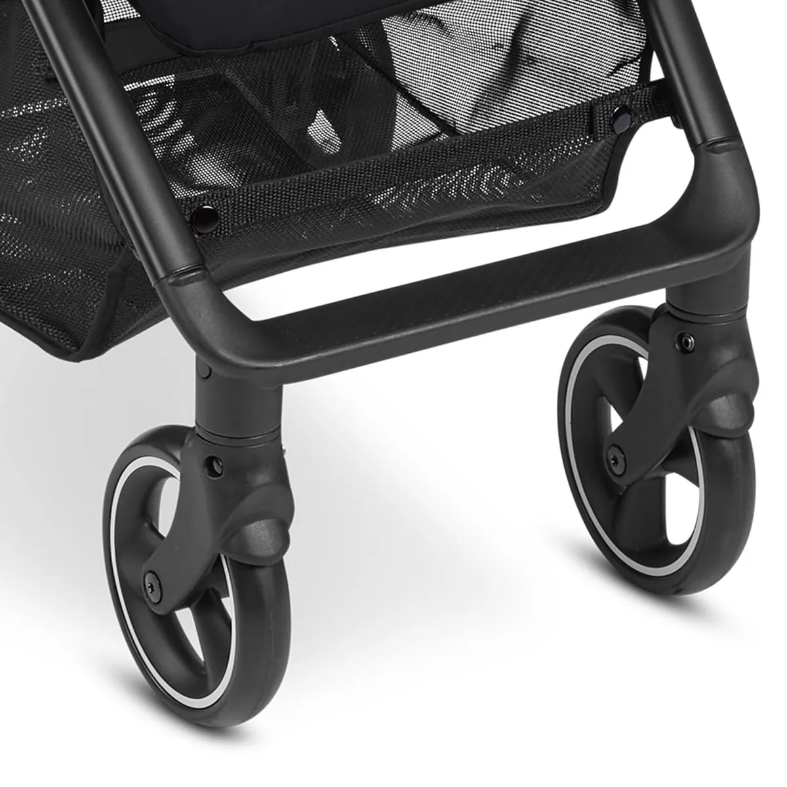
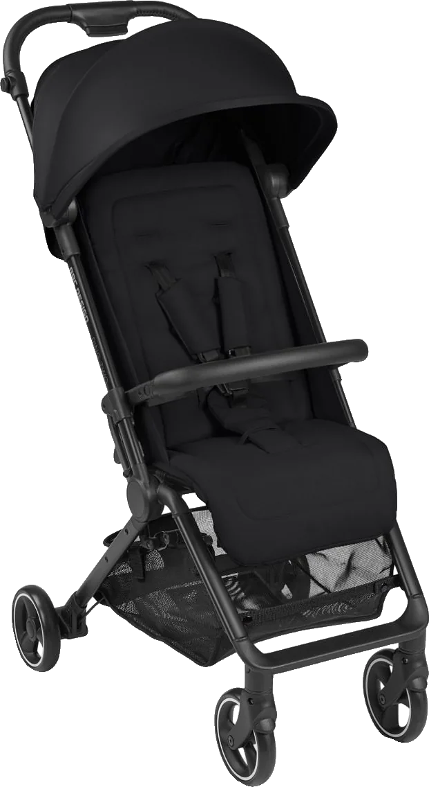
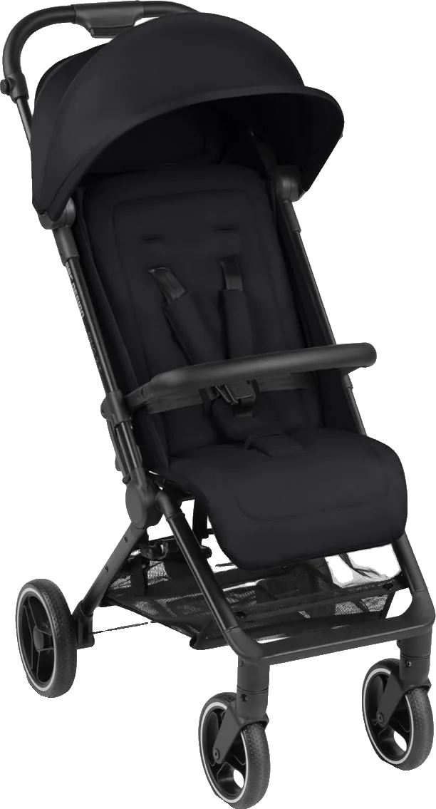
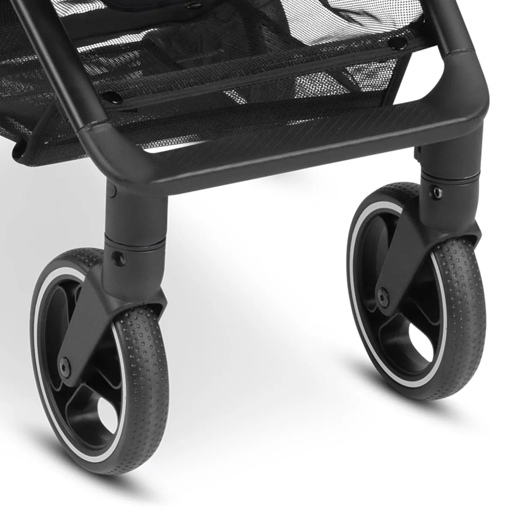
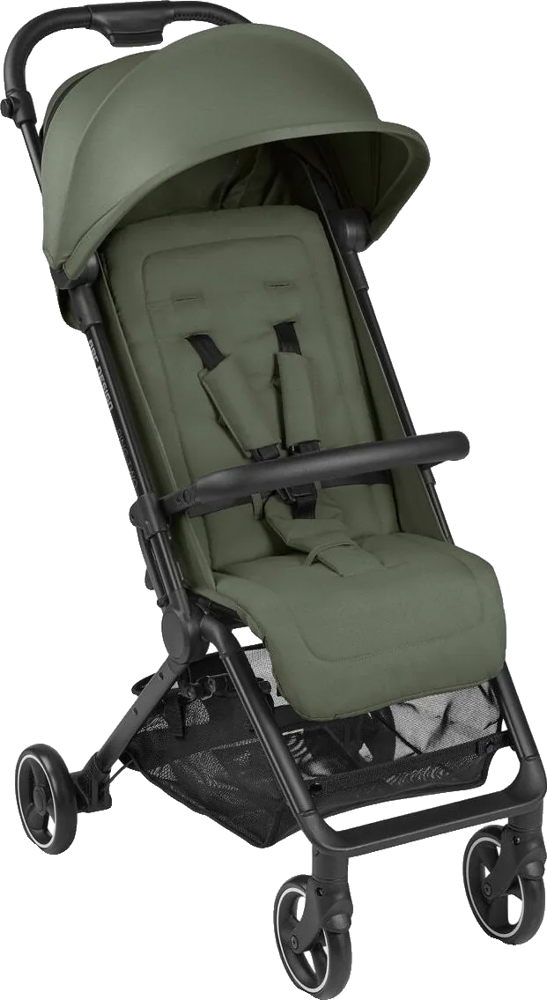
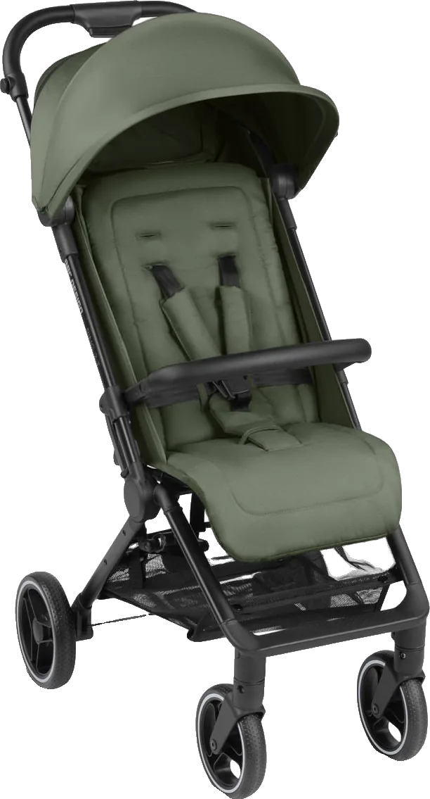
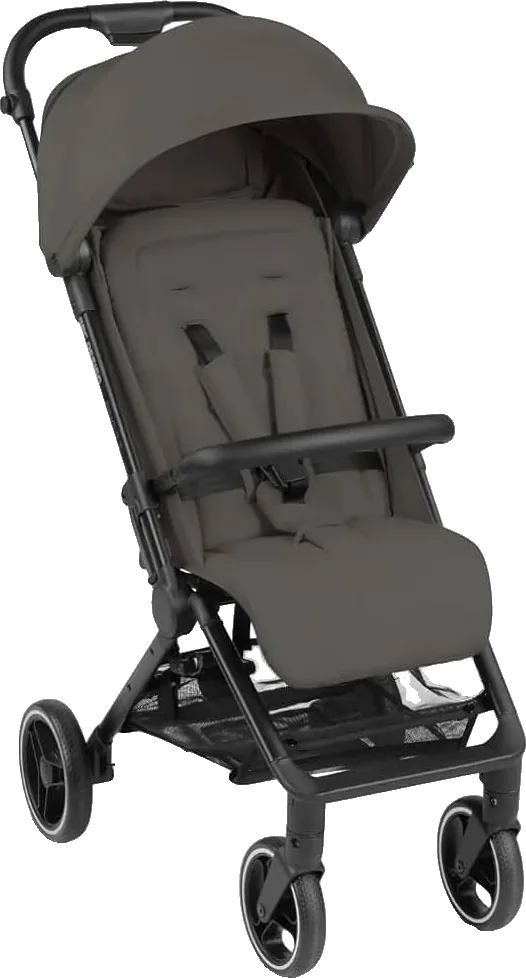

Ping 2
הגרסה הקלה יותר, לעיר ולטיסות.
- משקל
- 7.1 ק"ג
- רוחב פתוח
- 48.5 ס"מ
Ping 2 · טיולון מגרמניה
טיולון קל של ABC Design שמתקפל ביד אחת. מתאים לעיר, לטיולים ולטיסות, ויש לו שתי גרסאות.


שתי גרסאות

הגרסה הקלה יותר, לעיר ולטיסות.

אותה שלדה עם גלגלי גומי מלאים, שמתאימים גם לשבילים ולמדרכות משובשות.
בטיסה ובעיר
הכללים שונים מחברה לחברה, ולכן כדאי לבדוק מול חברת התעופה לפני הטיסה.
מקפלים אותו ביד אחת, ובקיפול הוא בעובי 26 ס"מ בלבד.
תיק הנשיאה מגיע איתו בקופסה. מכניסים את הטיולון לתיק, תולים על הכתף, ופותחים כשמגיעים.
וגם כשלא טסים, הוא הטיולון לסופר, לגינה ולביקור אצל סבתא, והעגלה הגדולה נשארת בבית.
גרסה וצבע



מפרט
הנתונים לקוחים מעמודי המוצר באתר המכירות שלנו.
| Ping 2 | Ping 2 Trekking | |
|---|---|---|
| משקל | 7.1 ק"ג | 7.6 ק"ג |
| פתוח, אורך ורוחב | 81.5 × 48.5 ס"מ | 81.5 × 57.5 ס"מ |
| מקופל | 57 × 48.5 × 26 ס"מ | 57.5 × 48.5 × 26 ס"מ |
| גלגלים | ממתין לנתון | גומי מלא, 19.5 ס"מ מאחור ו-17 מלפנים |
| בשתי הגרסאות | ||
| גובה הידית | 106 ס"מ | |
| עד משקל | 22 ק"ג | |
| מתאים מגיל | ממתין לנתון | |
| גב | 3 תנוחות, בלחיצת כפתור | |
| גגון | גגון גדול שנפתח, עם רשת אוורור | |
| בדים | נשלפים לכביסה, מסננים קרינת UV ודוחים נוזלים | |
| סל | עד 5 ק"ג | |
| בקופסה | תיק נשיאה | |
| טיסה | מאושר לתא הנוסעים ברוב חברות התעופה. כדאי לבדוק מול חברת התעופה | |
| תקן | עומד בתקן הישראלי | |
שאלות
אותה שלדה ואותו קיפול. ב-Trekking יש גלגלי גומי מלאים שמתאימים גם לדרכים משובשות, והוא קצת רחב וכבד יותר: 7.6 ק"ג לעומת 7.1.
הוא מאושר לתא הנוסעים ברוב חברות התעופה, ומגיע עם תיק נשיאה. הכללים שונים מחברה לחברה, ולכן כדאי לבדוק מול חברת התעופה לפני הטיסה.
הוא מתאים לילדים עד 22 ק"ג. מאיזה גיל: ממתין לנתון
הפינג נמכר בישראל כבר שנתיים. כתבו לנו בוואטסאפ, ונעזור לכם לבחור בין שתי הגרסאות.